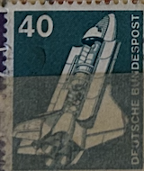
| SOURCE | TITLE| IMAGE MATCH | click to source page |
| HipStamp | Germany 1975 Space Shuttle Space Laboratory 40pf Fine MNH** A13P58F610- | Europe - Germany & Colonies - Germany, Stamp / HipStamp | 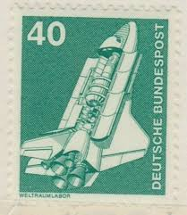 |
| eBay | Space German & Colonies Postage Stamps for sale | eBay | 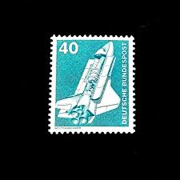 |
| eBay | West Germany - 1975 - Industry and Tecnic - 40Pfg - Used - #4 | eBay | 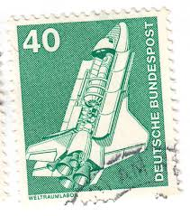 |
| Jace Stamps | Germany Scott 1174 Used - C$0.19 : Jace Stamps, Quality Stamps since 1997 | 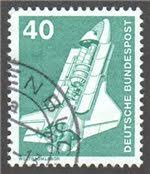 |
| Poppe Stamps | Poppe Stamps: German Federal Republic, 1975, 1743, Laboratories, Space, Space Ships, Laboratories, Space, Space Ships - stamps for sale by theme and country | 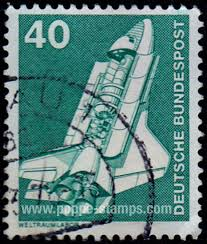 |
| Anyone into space-themed post stamps? Found this in a collection of an 8yo. Stamped in 1978, issued earlier. They started celebrating STS very soon ;) | 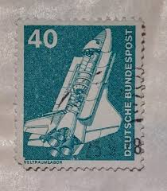 | |
| Dreamstime.com | Spacelab Stock Photos - Free & Royalty-Free Stock Photos from Dreamstime | 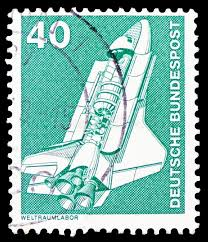 |
| eBay | Ireland Full Sheet Stamps | eBay | 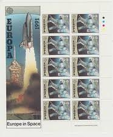 |
| Shutterstock | 8 Weltraumlabor Royalty-Free Images, Stock Photos & Pictures | Shutterstock | 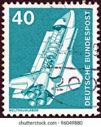 |
| Alamy | GERMANY- CIRCA 1980: stamp printed by Germany, shows Duden Dictionary, Old and New Editions, circa 1980 Stock Photo - Alamy | 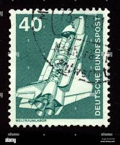 |
| springer.com | Adaptive (Trans-)Globalization | Springer Nature Link | 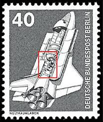 |
| Shutterstock | Two Identical Cancelled 1975 German Postage Stock Photo 2645205673 | Shutterstock | 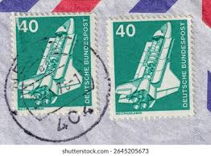 |
| Alamy | GERMANY - CIRCA 1975: a stamp printed in the Germany shows Space Shuttle, circa 1975 Stock Photo - Alamy | 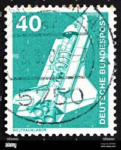 |
| Shutterstock | 6+ Thousand Deutsche Post Royalty-Free Images, Stock Photos & Pictures | Shutterstock | 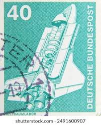 |
| Shutterstock | Space Shuttle Illustrations: Over 1,587 Royalty-Free Licensable Stock Photos | Shutterstock | 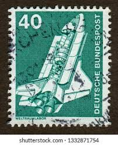 |
| eBay | Space Postage Hungarian Stamps for sale | eBay | 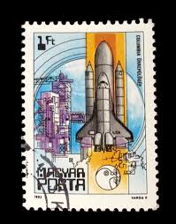 |
| eBay | German Stamp Weltraumlabor 40 Pfennig Deutsche Bundespost Space Shuttle TKS216* | eBay | 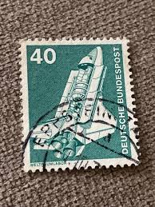 |
| eBay | German Stamp Weltraumlabor 40 Pfennig Deutsche Bundespost Space Shuttle TKS820* | eBay | 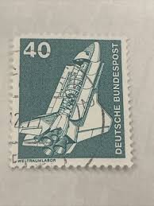 |
| eBay | Germany 1975 40pf SPACE SHUTTLE SC 1174 MNH | eBay | 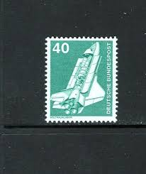 |
| First Day Covers Online | C125a / 45c Futuristic Mail Delivery Se-Tenant Block Fleetwood 1989 First Day Cover - First Day Covers Online | 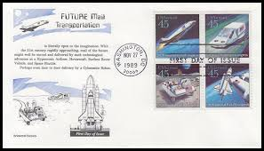 |
| Shutterstock | Fact Stamp: Over 783 Royalty-Free Licensable Stock Photos | Shutterstock | 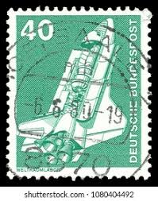 |
| Colnect | Stamp: Space Shuttle "Buran" (Cuba(30th Anniversary of the First Man in Space) Mi:CU 3471,Sn:CU 3306,Yt:CU 3111,Sg:CU 3616 📮 | 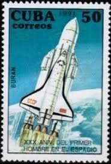 |
| eBay | German Stamp Weltraumlabor 40 Pfennig Deutsche Bundespost Space Shuttle TKS66 | eBay | 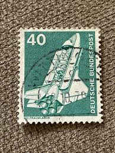 |
| eBay | Berlin 498 FN 3 stamped, Mi. -,30 | eBay | 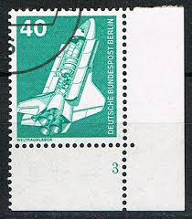 |
| Dreamstime.com | An Old Green Vintage Postage Stamp with an Image of the Space Shuttle Editorial Photography - Image of black, nostalgia: 115328672 | 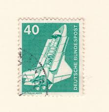 |
| Shutterstock | 3+ Thousand Mission By India Royalty-Free Images, Stock Photos & Pictures | Shutterstock | 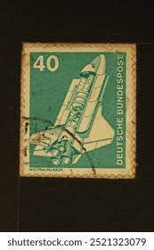 |
| Dreamstime.com | Tarjeta De Felicitación Vintage Spacecraft Imagen de archivo - Imagen de celestial, tema: 388287325 | 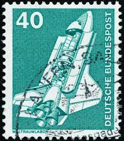 |
| Tici Tech | GRENADA 1978 | 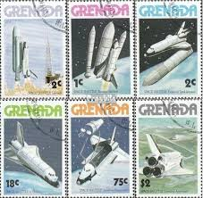 |
| eBay | Deutsche Bundespost 40 Weltraumlabor Postage Stamp 1975 Used | eBay | 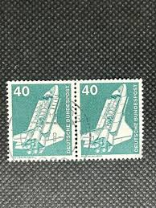 |
| eBay | MBK Rund um den Hohenbogen 1079m Bayer. Wald. Erholungsort 8494. Versendet | eBay | 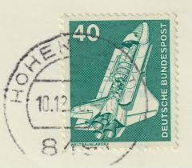 |
| eBay | IRELAND (7) XMAS SHEETS (1985-91) + (2) EUROPA SPACE #832 & 833 (1991) MNH | eBay | 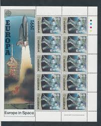 |
| eBay | 10) 1980's Space Shuttle SPACE NASA MOON Celebrate the Century | eBay | 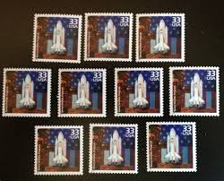 |
| DeqiStamps.com | Congo-Brazzaville year 1981 Space stamps | 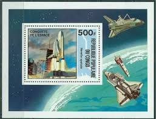 |
| eBay | Berlin MiNr. 498 FN 1 - 3 (Formnummer) zur Auswahl postfrisch** (AJ 966) | eBay | 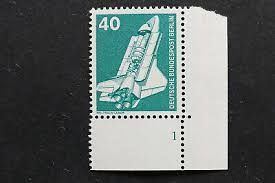 |
| eBay | DEUTSHES GERMANY STAMP MNH [SALE] [Choose 10pc of MINT is $3.5] unused WM8129 | eBay | 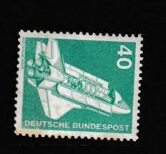 |
| buyhungarianstamps.com | 3622-3627 Bulgaria - Space Shuttle Missions, 10th Anniv. (MNH) – Eastern Europe Postage Stamps | Hungaria Stamp Exchange | 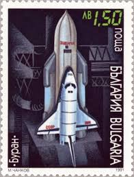 |
| Etsy | 5 Space Shuttles Stamps, Vintage Unused USPS 33 Cent Postage Stamps, 1980s Celebrate the Century, Issued in 2000 Gummed Stamps - Etsy | 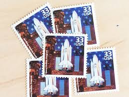 |
| 4StampSales | Marshall Islands - 1991 US Space Shuttle Flights - Blk 4 Stamps #394a | 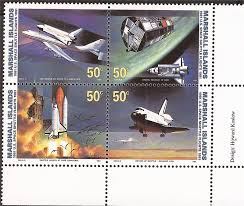 |
| eBay | Space Souvenir Sheet Hungarian Stamps | eBay | 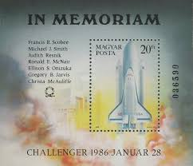 |
| Alamy | GERMANY- CIRCA 1980: stamp printed by Germany, shows Franz Xaver Gabelsberger Inventor of a German Shorthand, circa 1980 Stock Photo - Alamy | 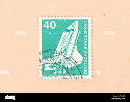 |
| eBay | US FDC #1912-1919 Aristocrat 1981 Kennedy Center FL Space Achievements Set of 8 | eBay | 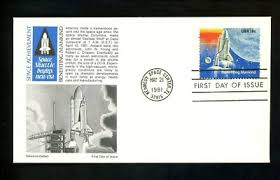 |
| ProBoards | Space | The Stamp Forum (TSF) | 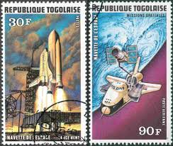 |
| eBay | Grenada Stamp Scott #842-847, Space Shuttle, Set of 6, MNH, SCV$3.80 | eBay | 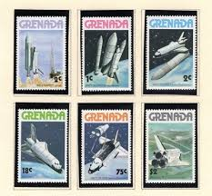 |
| 1981 Republique Islamique De Mauritanie 🇲🇷 embossed fdc | 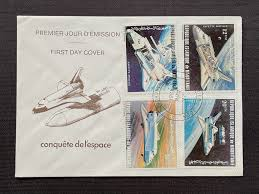 | |
| eBay | MARSHALL ISLANDS, SCOTT # 391-394, MNH PLATE BLOCK - USA SPACE SHUTTLE FLIGHTS | eBay | 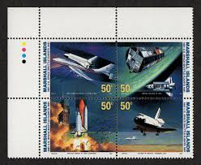 |
| stamp-collecting-resource.com | Postage Stamp Picture Gallery - Photos of Early US and Worldwide Stamps | 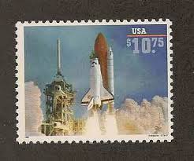 |
| Pngtree | 1970s Stamp Featuring A Large Space Shuttle And Satellite, Space Race Clipart, Space Shuttle Clipart, Shuttle Clipart PNG Transparent Image and Clipart for Free Download | 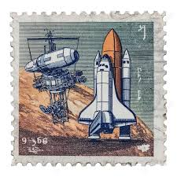 |
| 4StampSales | US Stamp 1995 Space Shuttle Challenger Plate Block of 4 Stamps - Scott #2544 | 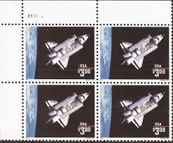 |
| eBay | US Stamp, 2544 1996 $3.00 Space Shuttle Challenger partial gum | eBay | 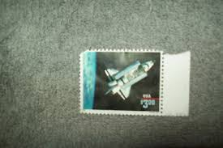 |
| HipStamp | Congo- 1981 Space Shuttle - CTO Fancy Cancel S/S VF WE Ship to World Wide | Africa - Congo, Stamp / HipStamp | |
| eBay | Monaco #YT1366 MNH 1983 Europa CEPT Space Shuttle Challenger [1369] | eBay | |
| eBay | US 2544 Space Shuttle VF used $3 Priority Mail. On Paper. Nice Cancel. | eBay | |
| eBay | Mali Challenger Spacecraft Astronaut Sally Ride Imperf strip 3 Specimen RRR 5736 | eBay | |
| Etsy | FIVE 45c Space Shuttle Airmail Stamp | Vintage Unused Postage Stamps | Space Stamps | Apollo | Space Station | NASA | Moon and Mars Missions - Etsy UK | |
| eBay | Marshall Islands Space Postal Stamps for sale | eBay | |
| USA Set of Space Benefiting Mankind 1981 Stamp #usa #spaceexploration #postage #stampcollection #philately #stamps Issue: USA Set of Space Benefiting Mankind 1981 Stamp Type: Stamp Number of Stamps: 2 Stamps Denomination: 13 | ||
| Etsy | Space Shuttle Stamps - Etsy | |
| Etsy | Set of 5 Return to Space Stamps, Vintage Unused USPS 33 Cent Postage Stamps, 1990s Celebrate the Century, Issued in 2000 Gummed Stamps - Etsy | |
| eBay | US FDC #1912-1919 Historic Providence Mint 1981 FL Space Exploration 1/10 Gold | eBay |